Zemlje
Zemlje koje su otvorile svoja vrata izbjeglicama.
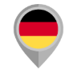
Njemačka
Njemačka je započela sa ovim projektom u novembru 2014.te godine i od tada su njena vrata otvorena za sve izbjeglice.
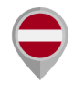
Austria
Austria je otvorila vrata za izbjeglice još od januara 2015.te godine.
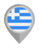
Grčka
Grčka je otvorila vrata za izbjeglice još od oktobra 2015.te godine.
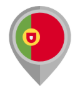
Portugal
Portugal je otvorio vrata za izbjeglice još od oktobra 2015.te godine.
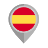
Španija
Španija je otvorila vrata za izbjeglice još od oktobra 2015.te godine.
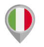
Italija
Italija je otvorila vrata za izbjeglice još od polovine novembra 2015.te godine.
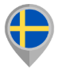
Švedska
Švedska je otvorila vrata za izbjeglice još od polovine oktobra 2015.te godine.
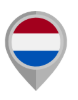
Holandija
Holandija je otvorila vrata za izbjeglice još od polovine oktobra 2015.te godine.
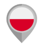
Poljska
Poljska je otvorila vrata za izbjeglice još od polovine oktobra 2015.te godine.
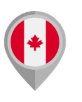
Kanada
Kanada je otvorila vrata za izbjeglice još od februara 2016.te godine.
Češka Republika
Češka Republika je otvorila vrata za izbjeglice još od maja 2016.te godine.
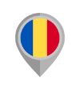
Rumunija
Rumunija je otvorila vrata za izbjeglice još od maja 2016.te godine.
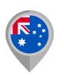
Australia
Australia je otvorila vrata za izbjeglice još od januara 2017.te godine.
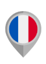
Francuska
Francuska je postala dio internacionalne mreže od aprila 2018.te godine.
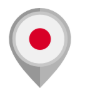